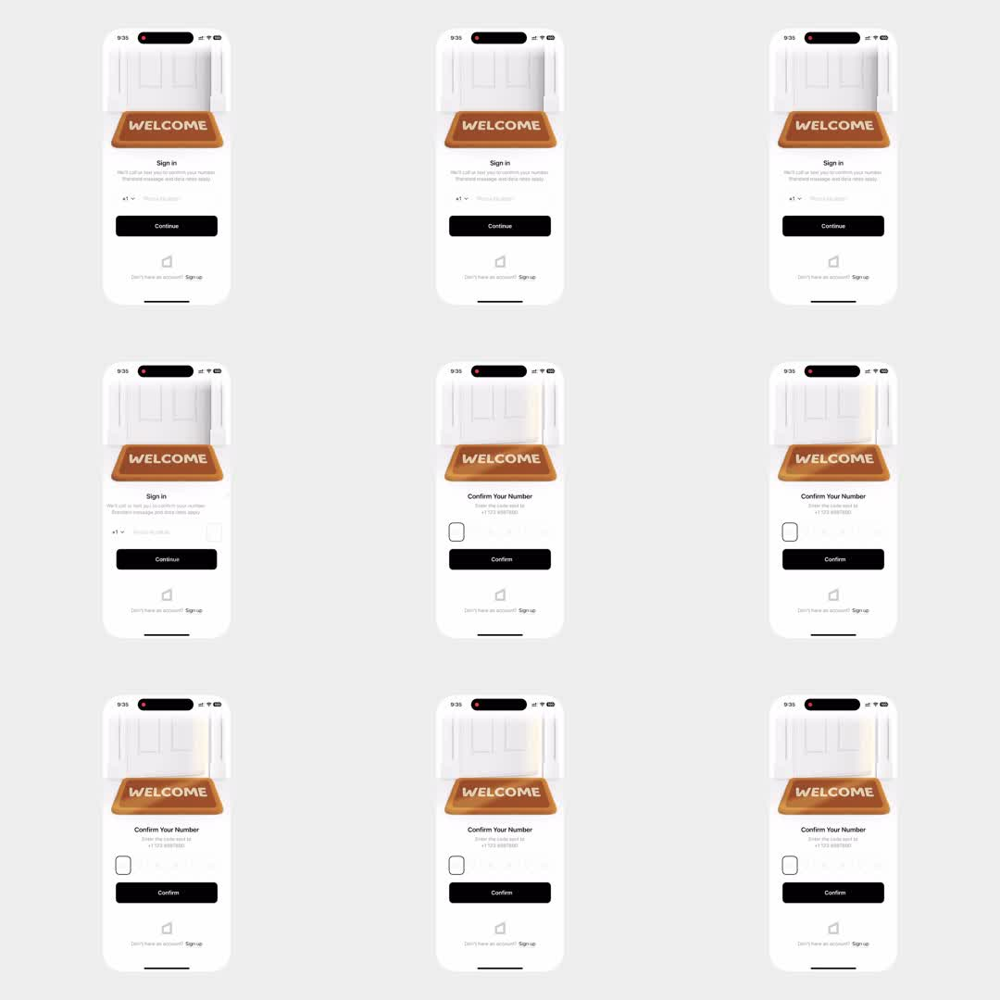

OTP: an iPhone sign-in flow topped by a 'WELCOME' doormat illustration lying in a doorway with light spilling in - a slow light sheen sweeps across the door/doormat between states; Sign in collects phone number (+1 dropdown, Continue button), then transitions to 'Confirm Your Number' showing the sent-to number and 6 empty OTP boxes with Confirm; number pad implied.
Media
Frame-by-frame

0-30%
Sign in screen: doormat header (white paneled door, brown WELCOME mat), 'Sign in' title, phone field with +1 flag picker, black Continue pill, 'Don't have an account? Sign up'.
30-50%
A soft light sweep plays across the door image (moving highlight left to right) as the form validates.
50-100%
Screen slides to 'Confirm Your Number' - 'Enter the code sent to +1 723 4567890', 6 OTP boxes (first focused with rounded border), Confirm button; doormat header persists across the transition.
Build prompt
Rebuild this flow 1:1: an OTP sign-in - two screens under a persistent "WELCOME" doormat header illustration, with a light sheen sweep across the doorway while the form validates.
## Integration
Integration: stack-agnostic spec - every value is plain layout/typography/CSS; any motion is described as duration + curve that maps to any animation library.
## Screen 1 - Sign in
Header (persists across both screens): white paneled door, brown WELCOME doormat, light spilling in. Below: "Sign in" title, phone field with +1 flag picker, black Continue pill, "Don't have an account? Sign up" link.
## Screen 2 - Confirm your number
"Confirm Your Number" title, "Enter the code sent to +1 723 4567890" (the actual sent-to number inline), 6 OTP boxes (first focused with rounded border emphasis), Confirm button. The doormat header persists unchanged.
## Transitions
- Validation: a soft light sheen sweeps left-to-right across the door image, 1.2s ease-in-out, once - it reads as "checking".
- Screen 1 -> 2: slide/crossfade 400ms; the header is the visual anchor and never moves.
- OTP: focus auto-advances on digit entry; focused box border emphasizes 120ms.
## Calibration
- Sheen plays once per validation - it is a state signal, not decoration; don't loop it.
- OTP boxes: mono digits, generous size, one focus ring color; first box already focused on arrival.
## Reduced motion
Sheen skipped; screens crossfade 150ms.
## Don't miss
- The doormat header is the brand moment and survives the transition untouched.
- The sent-to number renders inside the confirm copy.
- Zero taps to start typing the code - focus lands in box 1.